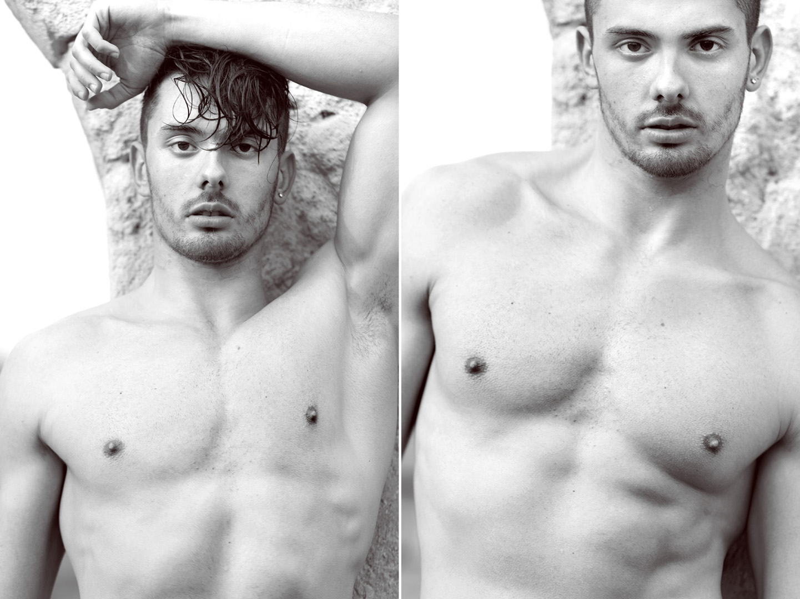

BIO
MATTIA FOTOMODELLO - ATTORE
ALTEZZA 1.84
TORACE 100
VITA 74
ANCHE 95
SCARPE 42,5
OCCHI CASTANI
CAPELLI CASTANI

Mattia Lo cascio, nato a Taranto il 22/09/1993, attualmente residente a Milano.
Giovane modello, fotomodello e aspirante attore. Si diploma in lingue straniere presso il liceo Aristosseno a Taranto nel 2012, proseguendo i suoi studi presso l’universita’ di Urbino nella facolta’ di scienza della nutrizione. Intraprende il suddetto percorso di studi, spinto dalla passione per il fitness coltivata durante gli anni, dovuta ad un’adolescenza difficile per via del suo aspetto fisico in sovrappeso, che non gli permetteva di relazionarsi apertamente con gli altri in quanto causa di disagio interiore.
Si iscrive in palestra, praticando il sollevamento pesi e le arti marziali, due sport che contribuiscono ad accrescere col tempo, la fiducia nelle sue possibilita’, forgiando la sua mente e il suo spirito estremamente motivato e competitivo, oltre che il suo corpo scolpito. Arrivano le prime vittorie in competizioni nazionali di kickboxing e di fitness. Consegue nel frattempo, i brevetti di istruttore di 1°, 2° e 3° livello di body training e nutrizione, certificati dal C.O.N.I. Proprio cosi, spinto dal desiderio di riscatto, comincia la sua carriera nel 2012 nel settore della moda, lavorando per brand nazionali e internazionali. Continua oggi il suo cammino in giro per il mondo, puntando a diventare un attore di successo. Sfruttando i suoi titoli e la sua esperienza, lavora inoltre come preparatore atletico.
Mattia Lo Cascio cosi descritto da diversi giornalisti e critici del settore: “corpo statuario, dalle linee greco-romane. Bellezza sporca, dai tratti internazionali, occhi cervoni e capelli medio-lunghi castani. Professionalmente, parametri commerciali ed editoriali a 360°.

MATTIA MODEL - ACTOR
Mattia Lo Cascio, born in taranto on 22/09/1993, currently living in Milan.
Young model, actor and model shooting. He studied foreign languages at the high school “Aristosseno” located in Taranto in 2012, he continues studies at the university of Urbino in the faculty “science of nutrition”. He chooses this course, pushed by passion for fitness cultivated during the years, due to difficult adolescence by its appearance in overweight, that do not relate allowed openly with others and it may cause discomfort inner.
He enters in gym, excercising lifting weights and martial arts, sport that contributed to increase, with time, confidence in its possibilities, forging his mind and its highly motivated and competitive spirit, in addition to his ripped body. He gains some victories in national competitions of kickboxing and also in body fitness competitions. Meanwhile, he takes the patents of instructor 1st, 2nd and 3rd level of body training and nutrition, certified by Coni. In this way, pushed by the desire to redemption, he begins his career in 2012 in the fashion industry, working for nationals and internationals brands. He continues today, his way around the world, aiming to become an actor of success, exploiting his qualifications and experience, working also as trainer.
Mattia lo cascio as described by several journalists and critics of the field: "ripped body, greek-roman lines. Dirty beauty, brown eyes and medium-long brown hair . Professionally, full commercial and editorial parameters.